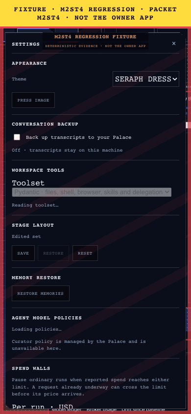
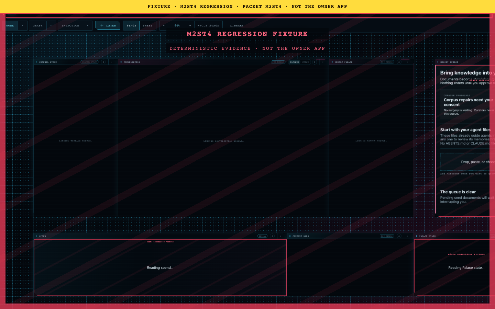
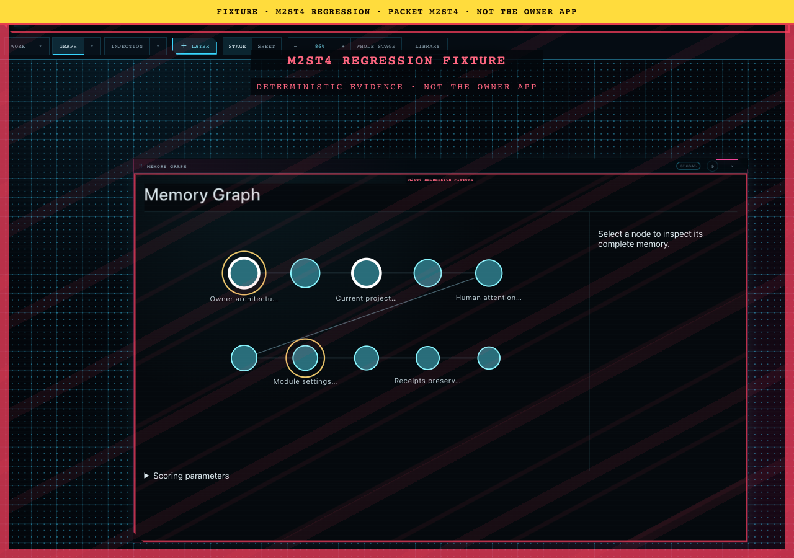

M3TH evidence review 11
canon/m2st4/controls/02-app-settings-phone-390x844.png
canon/m2st4/fixture-curtain/fixture-curtain.png
canon/m2st4/human-numbers/01-spend-human-numbers-1280x900.pngcanon/m2st4/human-numbers/02-graph-decluttered-1280x900.png